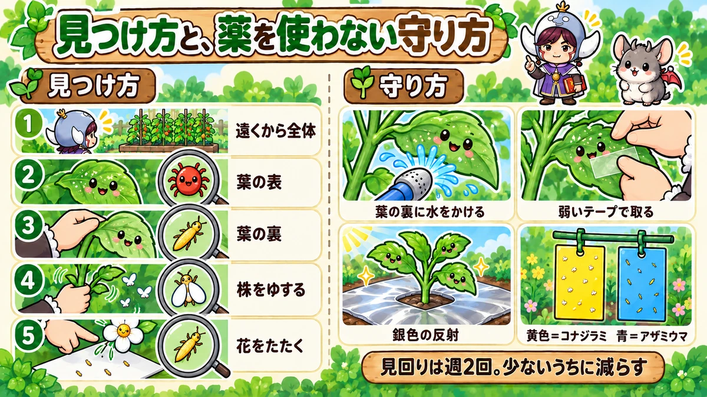

Spider mites, thrips and whitefly 🔍 Turn the leaf over
🔍 "My aubergine leaves have gone pale and speckled, and the plant looks tired."
🔍 "My strawberries are misshapen and the skin looks dull and brownish."
🔍 "I brushed my tomato and a cloud of tiny white insects flew up."
Hello, I'm Eiko. Eight years of growing vegetables organically and without pesticides, and a teaching licence in science.
Aubergine leaves that have quietly gone pale and scratchy-looking; strawberries that are lopsided or dull brown on the surface; tiny white insects bursting off a tomato. The culprits may be spider mites, thrips or whitefly — all very small pests.
They're so tiny you have to look hard to see them, and they hide under leaves and inside flowers, so you notice late. This article covers telling the three apart, when they appear, pesticide-free control and what to watch for crop by crop.
Where you are: these three are pests almost everywhere vegetables grow. The common spider mite is the two-spotted (red) spider mite; the whitefly that spreads tomato yellow leaf curl is the silverleaf (sweet potato) whitefly, a problem in warm regions such as the southern United States; in cooler places and greenhouses you'll more often meet the glasshouse whitefly. Thrips go by "thunderflies" in Britain and are the cause of silvery onion and leek leaves.
What to do: look under the leaves, in new shoots and inside flowers twice a week; wash mites off with water; lift them off with gentle sticky tape; use reflective silver mulch; use yellow sticky cards for whitefly and blue for thrips to monitor and reduce them; clear weeds round the plot; bag badly affected leaves and take them off the plot.
What this diagram says （図解の文字）
- Telling three tiny pests apart
- "Spider mites": "Pale, scratchy upper leaves; webbing" ／ "Hot, dry summer"
- "Thrips": "Inside flowers; misshapen fruit; white onion leaves" ／ "Spring to autumn"
- "Whitefly": "Fly up when shaken; spread virus diseases" ／ "Summer to autumn"
- "All about 1 mm. Look under the leaves first"
① The three at a glance
Spider mites
- Size: 0.2–0.5 mm; red or yellowish-green dots
- Where: under the leaves
- Damage: tiny white specks spread over the upper leaf like scratches; in bad cases the whole leaf goes pale or brown and fine webbing appears
- When: hot, dry weather
- Common on: aubergines, tomatoes, watermelons, cucumbers, strawberries, shiso, okra, green beans
Thrips
- Size: 1–2 mm; slender, yellowish or blackish
- Where: inside flowers, in new shoots, under leaves
- Damage: white streaks on leaves, misshapen or marked fruit, silvery-white streaks on onion and leek leaves
- When: spring to autumn
- Common on: strawberries, spring onions, onions, aubergines, peppers, cucumbers
Whitefly
- Size: about 1 mm; white-winged, like a tiny moth
- Where: under the leaves
- Damage: weakens plants by sucking sap; sticky honeydew leads to sooty mould; spreads virus diseases
- When: warm weather, especially summer to autumn
- Common on: tomatoes, aubergines, cucumbers, green beans
How they differ from aphids
Aphids are sap-suckers too, but about 2 mm long, plump, green or black, and they sit still in clusters on shoots and under leaves. Spider mites are smaller, like dots; thrips are slender and quick; whitefly have white wings and fly. All of them can turn up on the same plant at once, so check for all of them when you look under the leaves.
What to do for all three
- Look under the leaves, and at new shoots and flowers
- Wash the undersides of leaves with water
- Use silver mulch or reflective material to cut the numbers landing
- Use yellow (whitefly) and blue (thrips) sticky cards to monitor and reduce them
- Clear weeds round the plot
- Remove badly affected leaves and stems and take them off the plot
② Spider mites
What they are
As the name suggests, spider mites are closer to spiders than insects — tiny creatures 0.2–0.5 mm long. Look closely under a leaf and you'll see small red or yellowish-green dots moving.
Recognising the damage
- Tiny white specks spread over the upper side of the leaf, as if scratched
- Under the leaf, small red or yellowish-green dots are moving
- The underside may turn reddish
- In bad cases the whole leaf goes pale or dull brown and dies
- Fine, cobweb-like threads stretch across shoot tips and leaf joints
Because the leaves go white, mites are often mistaken for powdery mildew. Powdery mildew sits on the upper leaf like white powder and rubs off on your finger. Mite damage looks like scratched white specks, doesn't rub off, and there are mites underneath.
They boom in hot, dry weather
Spider mites multiply explosively when it's hot and dry — from the end of the rainy season to late summer, in spots rain doesn't reach, under balcony eaves. You can go from almost none to an infestation in two days. Late in the season, when plants are tired — autumn aubergines, for example — they're more vulnerable.
Watch for sunshine after rain
Mites take off when the rains stop. Especially when several wet days give way to a run of dry, sunny ones, check more often. Rain washes the leaf undersides and keeps them down; dry days let them surge. Midsummer is the time to be most alert.
Places where they build up
- Under balcony eaves and anywhere rain doesn't reach
- Beside an air-conditioning unit, where hot air dries everything out
- Against walls, or where concrete reflects heat
- Where plants are crowded and leaves overlap
In containers, simply moving them out of the air-conditioner's blast can change things. Herbs such as shiso and basil attract mites, so mind where you put them. Mites travel leaf to leaf along their threads and ride the wind, so if one plant has them, check the neighbours' leaf undersides too.
Control
- Wash them off: spray the undersides hard with a watering can or hose. With two people, one lifts leaves while the other sprays, so the water really reaches. Mites hate water, and this alone knocks them back a lot.
- Lift them with tape: press a low-tack tape gently against the leaf underside. Strong tape damages leaves.
- Remove webbing: brush away threads across shoot tips.
- Remove bad leaves: cut off leaves that have gone completely pale or are heavily webbed, and take them off the plot. Left there, they're a source.
- Don't let it get too dry: mites love dry air, so in dry spells wet the base and leaf undersides.
If the growing tip is unharmed, a plant can recover with new leaves even after you remove damaged ones. Protect the growing tip first.
Washing them off, step by step
- Do it in the cool of the morning; wetting leaves in the midday heat can damage them
- Turn the leaves over gently by hand, one at a time
- Take the rose off the can, or use a hose spray, and hit the undersides from below
- Don't forget the shoot tips and leaf joints
- Wash or brush away any webbing
- Repeat every few days. One go won't get them all; keeping it up matters
With many plants, start with the worst. Mites also lurk under the lowest leaves near the ground.
Home-made sprays
Diluted bicarbonate of soda or vinegar sprays are sometimes suggested. Used too often, they damage leaves, so don't spray frequently. Make washing with water your main method.
③ Thrips
What they are
Thrips are slender insects 1–2 mm long, yellowish or blackish. They squeeze into flowers, gaps in new shoots and the undersides of leaves to suck sap.
Recognising the damage
- White, streaky scarring or scratch marks on leaves
- Silvery-white streaks on onion and spring onion leaves
- Strawberries misshapen, the skin dull and brownish
- Brown marks or scars on aubergine and pepper skins
- Slender little insects moving inside the flowers
Check inside the flowers
Thrips often hide inside flowers. Tap an open flower gently over a sheet of white paper and the slender insects drop out where you can see them.
They pupate in the soil
Some thrips drop from the leaves to the ground as they mature and pupate in the soil, so they cycle through generations quickly and numbers jump suddenly. Covering the soil at the base with mulch or fleece is said to make pupation harder.
They spread virus diseases
Thrips can carry viruses to tomatoes, peppers and others. If leaves show ring patterns or brown spots and the plant stops growing, suspect a virus.
White onion and garlic leaves aren't necessarily disease
In spring, as onions and garlic near harvest, the leaves sometimes turn whitish and almost see-through. It looks alarming, but more often than not it's thrips feeding. Look closely and you'll find slender insects in the leaf folds. With only days to go to harvest it won't do much harm, and there's no need to pull the plants. Pulling and throwing them away thinking it's disease is a waste.
But if an onion leaf goes black from a fold and turns soft towards the bulb, suspect downy mildew or another disease; harvest early or pull and remove. White and scratchy, or black and soft — that's the difference.
Control
- Reflective silver: thrips dislike glare from silver mulch or crumpled aluminium foil. Use it to protect young plants.
- Blue sticky cards: thrips are said to be drawn to blue; blue cards let you monitor and reduce them.
- Remove dead flowers and leaves: spent flowers and dead leaves are hiding places. Clear them often.
- Clear weeds: they breed on weeds round the plot too.
- Some people spray a diluted chilli-in-spirits infusion (effect unproven).

What this diagram says （図解の文字）
- Finding them, and protecting plants without sprays
- "How to find them": "1. Look at the whole plant from a distance" → "2. Upper leaf" → "3. Underside" → "4. Shake the plant" → "5. Tap the flowers"
- "How to protect": "Spray water under the leaves" ／ "Lift them with low-tack tape" ／ "Reflective silver" ／ "Yellow = whitefly, blue = thrips"
- "Check twice a week. Knock them back while numbers are low"
④ Whitefly
What they are
Whitefly are about 1 mm long, with white wings, like tiny moths, and they gather in numbers under leaves. Shake the plant or brush a leaf and they rise all at once like white dust.
Recognising the damage
- Lots of tiny white insects under the leaves
- White insects fly up when you shake the plant
- The upper leaves are sticky, with black, sooty mould
- Tomato tip leaves turn yellow, curl and crinkle, and growth stops (yellow leaf curl)
They spread viruses
Whitefly's worst trait is spreading viruses. Tomato yellow leaf curl is carried by the silverleaf (tobacco) whitefly, and once a plant is infected it can't be cured.
Mind the mesh size
Whitefly are tiny enough to get through the roughly 1 mm mesh netting common in home gardens. Commercial growers under cover are advised to use 0.4 mm or finer. Fine mesh reduces airflow, so in home gardens watch the temperature under it in hot weather.
Control
- Yellow sticky cards: whitefly are drawn to yellow; hang cards near the plants to monitor and reduce them.
- Wash the undersides: spray water under the leaves to cut numbers.
- Pull weeds and volunteers: whitefly breed on weeds. Volunteer tomatoes from last year's dropped fruit can harbour viruses too — pull them.
- Tidy lower leaves: remove crowded lower leaves to improve airflow.
- Pull infected plants: bag a plant suspected of yellow leaf curl to trap the whitefly, then pull it and take it off the plot.
⑤ A five-minute check
A quick glance every day misses tiny pests. About twice a week, look in this order and you'll catch them early.
1. Look at the whole plant from a distance
Are leaves patchily pale? Are tip leaves crinkled, or yellow and curling? Start up close on any plant that looks unwell.
2. Look at the upper leaves
Are there clusters of tiny white specks, as if scratched? Are leaves sticky, or is there black, sooty mould?
3. Turn leaves over
Turn over leaves from the top, middle and bottom of the plant. Are tiny dots moving? Are there white insects? Is the underside oddly shiny? A whitish, shiny underside suggests mites.
4. Shake the plant gently
If white insects fly up, it's whitefly.
5. Tap the flowers
Hold white paper under an open flower and tap it with a finger. Slender insects that drop out are thrips.
Note the date and which plant. Next year you'll know roughly when to expect them. Taking a close-up photo of a leaf underside with your phone is handy too.
⑥ Crop by crop
Strawberries
In spring, as flowers keep coming, thrips hide in them and the fruit turns misshapen or dull. Tap open flowers to check. Check at the same time for aphids in the crown and under leaves, and slugs at the base.
One trick: crumple aluminium foil, open it out so it scatters light, and skewer pieces on bamboo sticks round the plants. Thrips and aphids are said to keep away.
From late winter into early spring, aphids and mites that sat still through the cold start moving as it warms. While numbers are low, look under leaves and in the crown and brush them off with a soft brush; it's easier to stop them building up in spring.
Aubergines
Spider mites build up in summer and autumn, especially on autumn aubergines. If leaves look pale and scratched, check underneath. Thrips and whitefly visit too, so lay silver mulch at planting to protect young plants.
Tomatoes
Watch especially for whitefly and yellow leaf curl. Use yellow sticky cards to see whether whitefly are arriving. Mites also build up in summer.
Peppers and shishito
Thrips get into the flowers, and brown scars or marks may appear on the fruit. Tap the flowers to check. Thrips can carry viruses to peppers, so also watch tip leaves for rings or brown spots. Silver mulch at planting is reassuring.
Cucumbers, watermelons and melons
Mites, whitefly and thrips visit in hot, dry weather. Check under the leaves.
Spring onions and onions
From early summer, onion thrips suck the leaves and white, scratchy streaks appear. In bad cases those parts die white and disease gets in more easily. Hoe the channel along the row to improve air and drainage, and snip off flower heads as they form.
Shiso and basil
You eat the leaves, so damage shows. Shiso attracts spider mites and the leaves go pale and scratchy. Wash the undersides with water.
Green beans and okra
Spider mites attack in dry summer weather. Check under the leaves.
What this diagram says （図解の文字）
- The pests each crop is prone to
- "Strawberries: thrips in the spring flowers" ／ "Aubergines: spider mites on autumn aubergines" ／ "Tomatoes: whitefly and yellow leaf curl"
- "Spring onions and onions: don't mistake white leaves for disease" ／ "Shiso: mites build up beside the air-conditioner" ／ "Peppers: thrips inside the flowers"
- "Bag damaged leaves and take them off the plot"
⑦ Telling them from look-alikes
Damage from tiny pests is easily mistaken for disease or growing problems. Check before you act.
Powdery mildew
White powdery mould on the upper leaf that rubs off on your finger. Mite damage doesn't rub off, and there are mites underneath.
Hunger
Leaves yellow evenly, starting from the oldest at the bottom. No white specks or scratches, and no insects underneath.
Sun scorch
Leaves or fruit on the side facing strong sun look bleached or brown and burned. Only the sunny side is affected, and there are no insects.
Virus disease
Mosaic mottling, crinkling, or tip leaves yellowing, curling and stalling. Removing insects doesn't cure it. Aphids, whitefly and thrips can carry viruses, so combine insect control with pulling plants that show symptoms.
Downy mildew on onions
Pale yellowish patches on leaves, with mould on damp days. In bad cases leaves fold, blacken and die. Tell it from the white scratches of thrips by colour and how it spreads.
⑧ Containers and balconies
Balconies are dry and heat up from walls and concrete — ideal for spider mites. On the other hand, there are few plants and you see them every day, so it's easy to catch problems early.
- When you water, spray the leaf undersides too; tilting the pot a little helps
- Keep pots out of the air-conditioner's hot blast
- Don't push pots against walls; leave a gap for air
- Check under the leaves of new plants before planting — tiny pests often come home with them
- Check the undersides of any pots you bring indoors, which can carry whitefly or mites
With few plants, pests on one spread quickly to the next. Move an affected pot a little apart while you treat it.
⑨ Prevention for all three
Protect them from the start
Tiny pests do most harm when they reach young plants. Check under the leaves when buying plants, and protect them with silver mulch or insect netting once planted.
Clear the weeds
All three breed on weeds round the plot. Cutting them back reduces the numbers flying in.
Don't let things dry out too much
Mites in particular love dry conditions. In dry spells, spray under the leaves to keep things from getting too dry. Take extra care under balcony eaves and other places rain doesn't reach.
Don't overfeed
Too much fertiliser, especially nitrogen, makes for soft, lush leaves and more sap-suckers. Stick to the recommended amounts.
Don't leave netting on for good
Insect netting is very useful while plants are young. But leave it on long after it warms up and the predators that eat thrips and aphids can't get in — and any pests that slipped inside can multiply with no enemies. For example, take off the netting or plastic you used on onions over winter once it warms up; with the local predators free to eat the thrips, plants often grow better. Decide in advance how long the netting stays on.
Using sticky cards
- Hang them on a stake at about plant height
- Yellow to monitor whitefly, blue for thrips
- Use only one or two per row
- Every week or two, look at what's stuck and whether numbers are rising
- Harmless or useful insects such as small wasps also get caught, so don't leave them up permanently
Think of sticky cards less as a way to catch everything and more as a way to see which pests are arriving and how many.
Let natural enemies help
Predatory mites and certain ladybirds eat spider mites; minute pirate bugs eat thrips. Spraying strong chemicals everywhere kills these allies too, and mites can even get worse. Rely on water and tape.
A home for natural enemies
Some growers plant tall grasses such as sorghum round aubergine and pepper beds as a home for predators. The predators settle in, and the grass works as a windbreak and screen, so small pests get in less easily. Tall grass also blocks sun and air, though, so plant it round the bed at a little distance, not right next to the crops.
Removing damaged leaves
When you remove badly affected leaves, don't let them fall to the ground, or the pests underneath scatter.
- Have a bag ready, open
- Snip the leaf and drop it straight into the bag
- For leaves with whitefly, slip the bag up from below before cutting, so they don't fly off
- Tie the bag and take it off the plot
At autumn clear-up, leaves left on the plot from badly affected plants can seed next year's problem. Take them all off the plot at clear-up time.
⑩ Through the year (central Japan)
- March–May: thrips in strawberry flowers; lay silver mulch at planting; check under the leaves of new plants
- June–July: thrips on spring onions; mites start to build after the rains; yellow sticky cards to watch for whitefly
- July–September: peak for mites and whitefly; spray under the leaves; watch for tomato yellow leaf curl
- September–October: mites on autumn aubergines; tired plants are vulnerable
- Clearing up: leaves from badly affected plants off the plot; tidy weeds round the plot
⑪ Where growers disagree, and common mistakes
Should I put out sticky cards? Yellow and blue cards help monitor and reduce pests, but ladybirds and other helpful insects get stuck too. A few near the plants for a short time is a good compromise.
Do bicarbonate or vinegar sprays work? Some say they helped against mites; others warn that too much damages leaves. Make water your main method; if you use a spray, make it weak and space out the applications.
Does companion planting work? Spring onions or garlic near strawberries, marigolds or basil near tomatoes and aubergines, are said to discourage mites, aphids and whitefly. Some report success, but no clear effect has been proven. If you plant them, treat them as a supplement to other measures.
Do chilli infusions work? A diluted chilli-in-spirits spray is said to deter pests by smell and keep leaves from drying out. Home-made sprays vary in strength and effect and can damage leaves, so test on an inconspicuous leaf first. Keep it off fruit close to harvest.
Common mistakes:
- Treating pale, scratchy leaves as powdery mildew — if there are tiny creatures underneath, it's mites; if white powder rubs off, it's mildew. Tell them apart first
- A mite explosion under the balcony eaves — dry and rain-free, perfect for mites. Spray under the leaves; don't let it get too dry
- Whitefly got in under the netting — 1 mm mesh lets them through. Use fine mesh, or combine yellow cards with checking under leaves
- Leaving damaged leaves on the plot — they spread from there. Take them off the plot
- Pulling onions with white leaves as diseased — white, see-through leaves near harvest are usually thrips. If harvest is close, grow on and lift them. Only suspect disease if they're black and soft
- A container beside the air-conditioner — hot air dries it out and mites boom. Move it and spray under the leaves
- Netting left on into spring — pests multiply inside and predators can't get in. Remove it as it warms, or lift the edges and check inside
⑫ Questions people ask
I can't see them with the naked eye. How do I check? Look at leaf undersides with a magnifying glass or your phone's camera zoomed in. Or tap leaves and flowers over white paper and look at what drops.
Is damaged fruit safe to eat? Yes — misshapen strawberries or blemished aubergines from thrips are fine to eat. Cut away any part that bothers you.
I get spider mites every year. Check whether you're growing in spots rain doesn't reach or that dry out easily. In hot weather, make spraying under the leaves a habit, and tidy weeds round the plot.
Do containers get them? Yes — balconies especially, being dry and out of the rain. Rinsing under the leaves with a shower is simple and effective.
After days of rain, they suddenly exploded on the first sunny days. Rain keeps mites down, but a run of dry, sunny days lets them surge. When the rain stops and the sun settles in, check under the leaves more often.
Does fertiliser make a difference? Too much, especially nitrogen, makes for soft, lush leaves that draw thrips, aphids and other sap-suckers. Overfeeding onions and garlic can bring them in too. Stick to the recommended amounts.
Will pale leaves turn green again? No — the scratched cells have been emptied and won't regain their green. But once you cut the pests back, new leaves grow normally green. A few pale leaves can stay; remove leaves more than half pale or heavily webbed so the plant can put its energy into new ones.
Do spider mites bite people? No. They feed on plant sap and are unrelated to the mites that bite skin or suck blood. They're tiny, though, so washing your hands after rinsing leaves is pleasant.
Hardly anything sticks to my cards. Good news — few pests. But spider mites don't fly, so they never land on cards. Keep checking under the leaves even if the cards are clean.
Science bit: six whys 🔬
Why do they multiply so fast? Spider mites, thrips and whitefly all go from egg to adult quickly and pile generation on generation in warm weather. Spider mites especially can go from egg to egg-laying adult in a short time in the heat. That's why "almost none a few days ago" turns into an infestation. With tiny pests, early detection matters most because their numbers rise so fast.
Why do spider mites hate water? They like dry air and multiply poorly in damp conditions. They're also tiny and light, so water washes them off leaf undersides easily. That's why mites are scarce in rainy spells and thrive where rain doesn't reach.
Why do sucked leaves go white? Mites and thrips pierce cells on the leaf surface and suck out their contents. Emptied cells lose their green pigment. Gather enough of these empty cells as tiny specks and the leaf looks pale and scratched. As the specks spread, the leaf loses its ability to catch light and make food; treat it while specks are few and the plant recovers more easily.
Why are they under the leaves? Probably because the underside is sheltered from rain and strong sun, and hidden from birds and other predators. Look only at the upper surface and you'll notice too late.
How do they spread viruses? When whitefly or thrips feed on an infected plant, they take up the virus with the sap. When they move on and feed again, the virus goes with them. Even if the insects' own damage is small, an infected plant can't be cured. That's another reason to cut them back while numbers are low.
Why do colours attract them? Many flying insects are thought to choose where to land by colour. Whitefly and aphids are drawn to yellow, like young leaves; thrips to blue. Strong silver glare, on the other hand, is hard to tell from the sky and is said to be avoided as a landing spot. Coloured sticky cards and silver mulch work by using these habits.
To sum up
- ✅ All three are about 1 mm or smaller. Check under the leaves, new shoots and inside flowers
- ✅ Spider mites: pale, scratchy upper leaves; explode in hot, dry weather; wash under the leaves
- ✅ Thrips: hide in flowers and new shoots; misshapen strawberries, white onion leaves; reflective silver, blue cards
- ✅ Whitefly: white insects under leaves; spread tomato yellow leaf curl; yellow cards; pull weeds and volunteer tomatoes
- ✅ 1 mm netting may not stop them. Protect plants from the start
- ✅ Take damaged leaves off the plot; tidy weeds round it
- ✅ Tell mites from powdery mildew: does white powder rub off?
- ✅ Check twice a week: whole plant, upper leaf, underside, shake, tap the flowers
- ✅ Mites love spots beside the air-conditioner and under eaves; don't leave netting on once it's warm
- ✅ White onion and garlic leaves before harvest are usually thrips — don't pull them as diseased
Tiny pests are hard to see, so it comes down to whether you're in the habit of looking. Next time you go round, turn over one aubergine or tomato leaf and have a look with a magnifying glass 🔍
Thank you for reading!